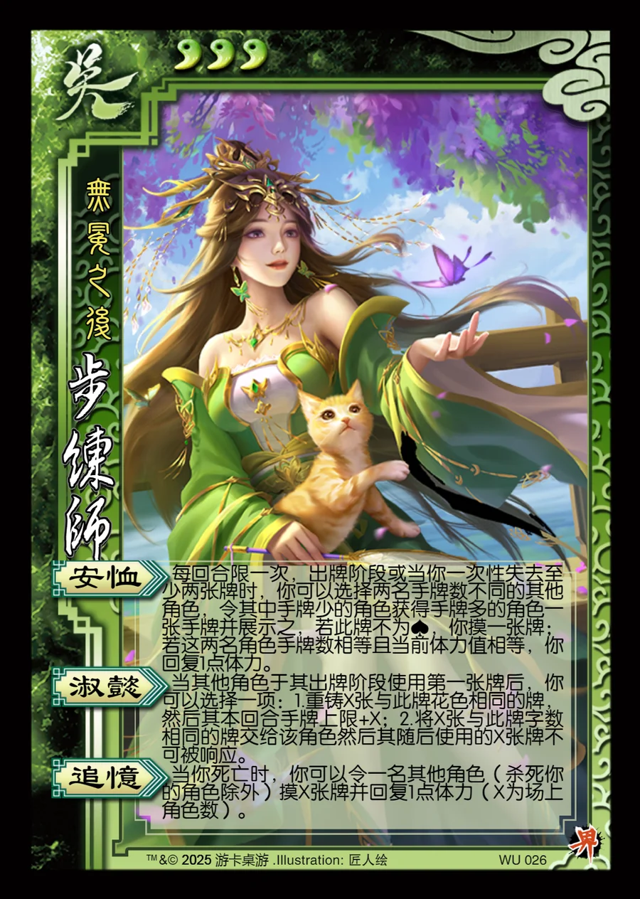

点击卡面查看大图
吴
界步练师
♥3无冕之后
安恤
每回合限一次，出牌阶段或当你一次性失去至少两张牌时，你可以选择两名手牌数不同的其他角色，令其中手牌少的角色获得手牌多的角色一张手牌并展示之，若此牌不为♠，你摸一张牌；若这两名角色手牌数相等且当前体力值相等，你回复1点体力。
淑懿
当其他角色于其出牌阶段使用第一张牌后，你可以选择一项：1.重铸X张与此牌花色相同的牌，然后其本回合手牌上限+X；2.将X张与此牌字数相同的牌交给该角色然后其随后使用的X张牌不可被响应。
追忆
当你死亡时，你可以令一名其他角色（杀死你的角色除外）摸X张牌并回复1点体力（X为场上角色数）。